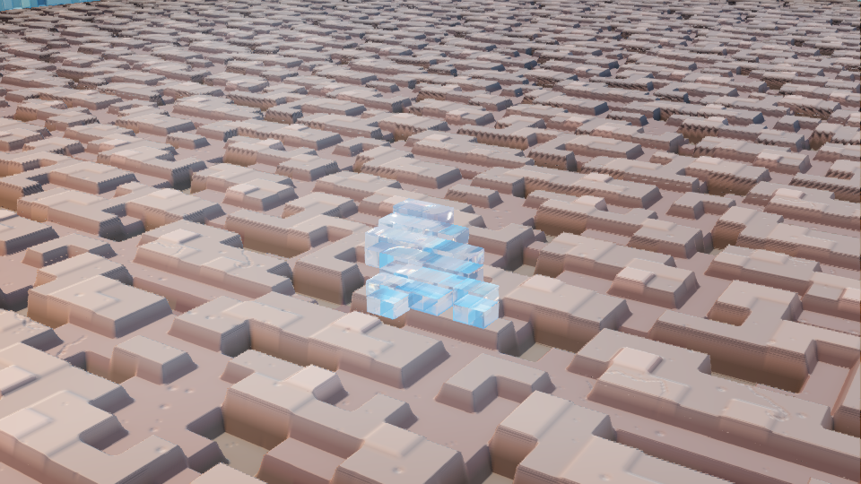
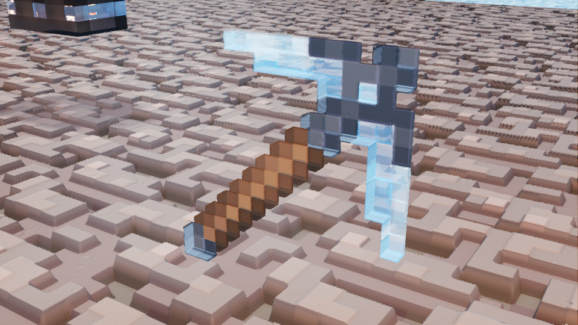
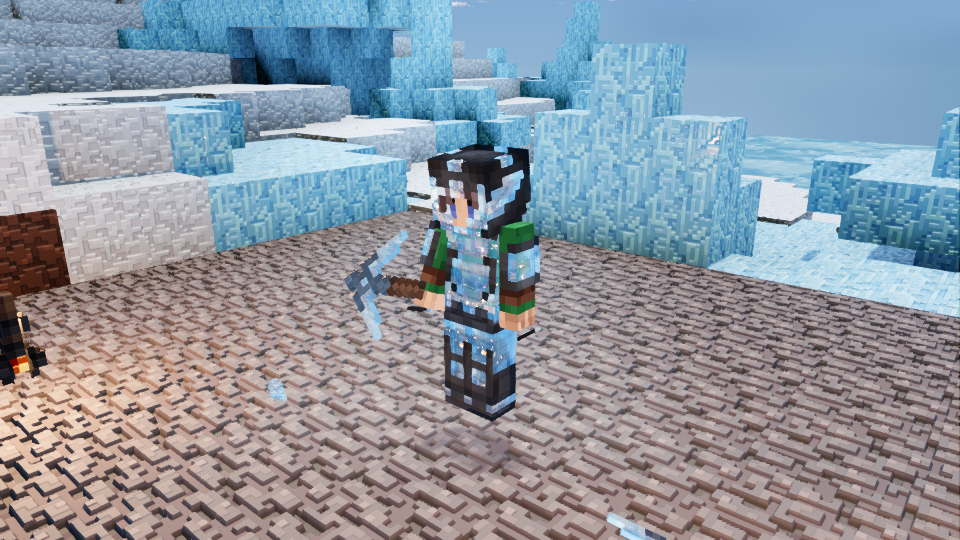
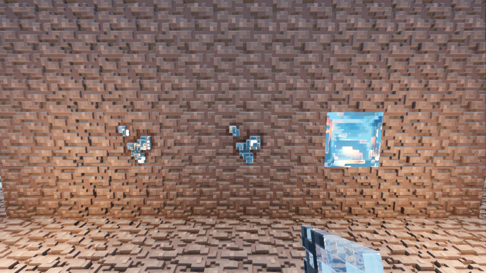
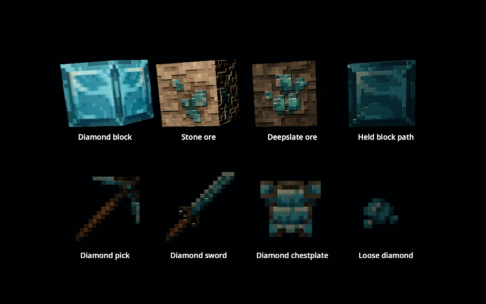
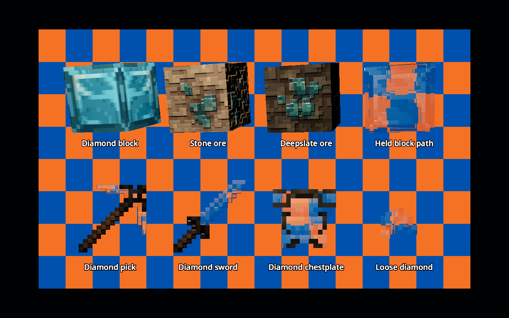

Corrected texture-aligned surface directions, crisp square facet edges and deeper refraction on diamond items. The wall material is unchanged.
The ordinary dropped item entity in Mineclonia, at its normal scale. The detached camera is close to it at FOV 30.




Both images use the same camera, lamp and item meshes without supplied tangents. Only the entity shader changes. The bottom-right card uses the same native loose-diamond texture as the dropped item above.

